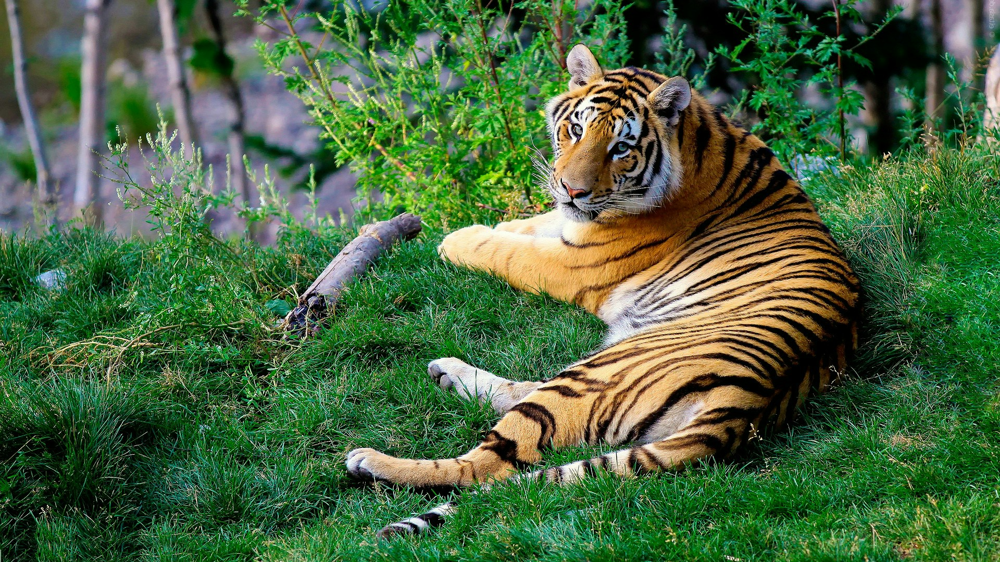

A Origem dos Gatos
De onde vêm os gatos domésticos?
Acredita-se que todas as espécies de felinos modernos vieram de um ancestral - o gato selvagem do Oriente Médio, Felis Sylvestris. Os investigadores basearam amplamente essa teoria nas suas semelhantes estruturas ósseas.
No entanto, surgiram mais evidências sobre a origem dos gatos quando um estudo publicado em 2007 analisou o DNA de diferentes gatos selvagens de várias regiões e os comparou com gatos domesticados. Curiosamente, eles descobriram que o DNA do gato selvagem africano se relacionava tanto com raças puras (sim, até o elegante Ragdoll ou Siamês) quanto com moggies de raça mista, o que acrescenta peso à teoria do antepassado comum.
Quando é que os gatos foram domesticados pela primeira vez?
Não foi até 1983 que tivemos o primeiro indício de domesticação de gatos, quando uma mandíbula de gato foi localizada no Chipre durante uma escavação arqueológica e estimara-se que a domesticação havia ocorrido há 8.000 anos atrás. Os investigadores pensaram que este gato deve ter sido domesticado porque a única maneira de um gato chegar à ilha era por meio de um navio com humanos, e era incrivelmente improvável que eles conseguissem trazer gatos selvagens com eles.
Pesquisas posteriores em 2004 definiram a origem da domesticação do gato ainda mais longe, de acordo com o The Smithsonian, um gato foi encontrado propositalmente enterrado com um humano, que se pensava ter 9.500 anos de idade.
O Smithsonian também afirma que alguns pesquisadores acreditam que o processo inicial de domesticação começou com os primeiros assentamentos agrícolas há cerca de 12.000 anos no Crescente Fértil (localizado no Oriente Médio). Os historiadores propuseram que, à medida que as pessoas começaram a cultivar e usar depósitos de grãos, isso atraiu ratos e ratazanas, e com a abundância de presas vieram os gatos selvagens. É provável que as pessoas tenham reconhecido os grandes benefícios do controlo de pragas, então permitiram que esses gatos ficassem, o que acabou por os levar a viver nas suas casas e se tornarem seus companheiros.
Gatos domésticos e gatos selvagens

Agora que sabe tudo sobre a história dos gatos e sobre as suas raízes selvagens, é hora de explorar como isso impactou as características e personalidade dos gatos. Pode surpreendê-lo que até hoje o DNA do seu gato doméstico é 95% semelhante ao dos tigres, e eles herdaram muitos instintos de seus antepassados selvagens. Alguns dos instintos herdados são os seguintes:
- Longas sessões de sono
- As mesmas técnicas de caça
- Excelente higiene
- Amassar pãozinho
- Marcar território
Vídeo Educacional
Para se aprofundar ainda mais na história dos felinos com a humanidade, assista esse vídeo curto e divertido!